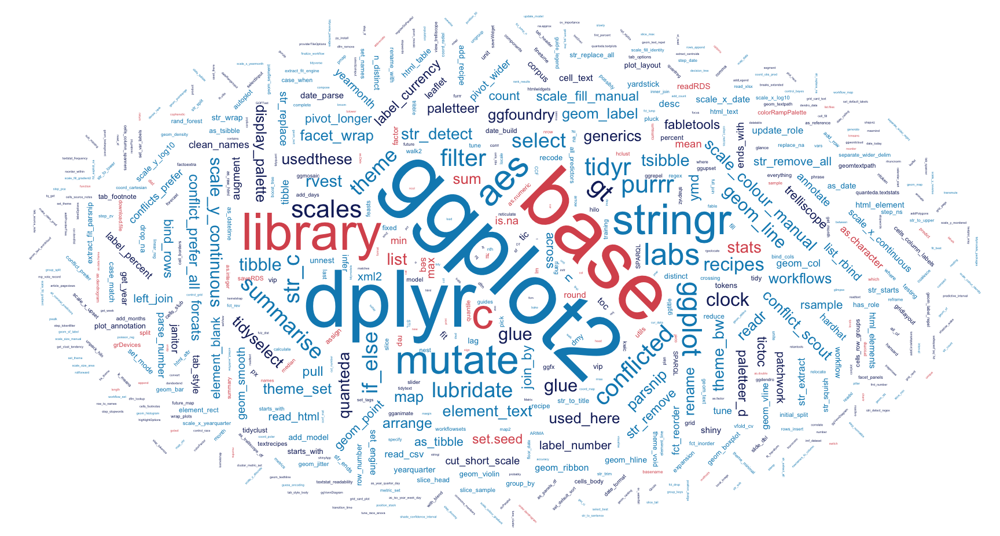

Projects
Toolbox
Blog
Package
About
Little Projects
With the
tidyverse
and
tidymodels
at their
Categories
All
(20)
R
(20)
animation
(1)
apps
(3)
clustering
(2)
correlation
(2)
dimension reduction
(2)
forecast
(1)
geospatial
(3)
machine learning
(3)
natural language processing
(1)
quant
(1)
regex
(2)
sample distribution
(1)
sets
(1)
simulation
(1)
special effects
(1)
statistical inference
(1)
tables
(2)
textual analysis
(3)
time series
(3)
web scraping
(4)
word embeddings
(1)
Order By
Default
Date - Oldest
Date - Newest
Updated - Oldest
Updated - Newest
A Footnote in History
8 min
The grammar of tables, footnotes and occupations consigned to history
Nov 1, 2022
Finding Happiness in The Smoke
9 min
Cluster analysis and the characteristics that bind London boroughs
Mar 19, 2022
Bootstraps & Bandings
13 min
Decades-old residential property bands and inference using a sample of those recently sold
Mar 8, 2022
Sea Monsters that Lost their Way
12 min
Predicting uncertain species of cetacean strandings recorded by the Natural History Museum
Dec 4, 2021
A Frosty Deal?
6 min
Quantitative textual analysis, word embeddings and analysing shifting trade-talk sentiment?
Sep 18, 2020
The Goldilocks Principle
4 min
Simulating stock portfolio returns inspired by bowls of porridge left by three bears
Aug 9, 2020
Weathering the Storm
2 min
Timeseries comparison and the impact of Covid-19 on the financial markets by sector
Aug 2, 2020

Favourite Things
4 min
R packages & functions that make doing data science a joy based on usage across projects
Jul 26, 2020
East-West Drift
5 min
Animated dimension reduction and East-West historical UN voting patterns
Jan 9, 2019
Seeing the Wood for the Trees
4 min
Visualising small multiples when crime data leave you unable to see the wood for the trees
Jan 1, 2019
Can Ravens Forecast?
7 min
Time series forecasting using cloud services spend data
Jul 29, 2018
Six Months Later
5 min
Exploring colour palettes and small multiples using cloud services spend data
Apr 2, 2018
Criminal Goings-on in a Random Forest
10 min
Criminal goings-on in a random forest and predictions with tree-based and glm models
Mar 1, 2018
Plots Thicken
6 min
Every story needs a good plot. Which plot types generate the most interest on Wikipedia?
Feb 7, 2018
Cluster of Six
8 min
Exploring parliamentary voting patterns with hierarchical clustering
Jan 29, 2018
Digging Deep
9 min
Do we see more planning applications when house sales are depressed?
Jan 10, 2018
Surprising Stories
4 min
A little interactive geospatial mapping and an unexpected find
Dec 20, 2017
House Sales
6 min
A series of events, such as the Financial Crisis and the 2016 Brexit vote, that damped down residential property sales in London
Dec 17, 2017
Where Clouds Cross
8 min
Visualising the dozens of overlapping sets formed by categories of cloud services
Nov 14, 2017
Let’s Jitter
4 min
Welcome to the
tidyverse
with data ingestion, cleaning and tidying. And some visualisations of sales data with a little jittering.
Sep 12, 2017
No matching items